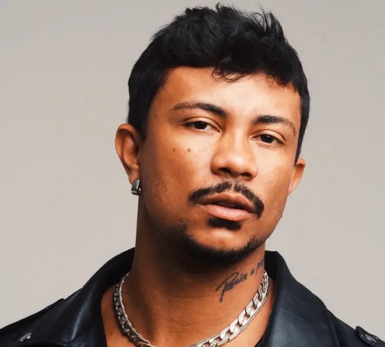
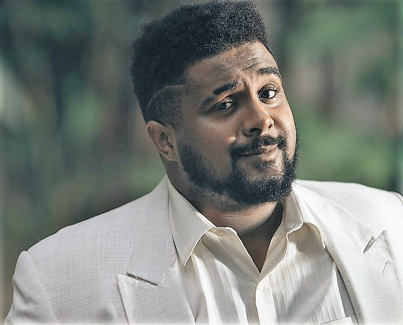
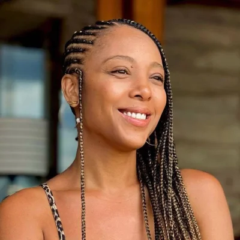

Matuê
Matheus Brasileiro Aguiar, mais conhecido pelo nome artístico Matuê, é um rapper, cantor, compositor e guitarrista brasileiro.
L7nnon
Lennon dos Santos Barbosa Frassetti (Rio de Janeiro, 30 de março de 1994), mais conhecido artisticamente pelo seu prenome estilizado L7nnon, é um rapper, cantor e compositor brasileiro.

Xamã
Geizon Carlos da Cruz Fernandes, mais conhecido como Xamã (Rio de Janeiro, 30 de outubro de 1989), é um rapper, cantor e ator brasileiro.
Veigh
Thiago Veigh da Silva, conhecido mononimamente como Veigh, é um rapper, cantor e compositor brasileiro.

Baco Exu do Blues
Diogo Álvaro Ferreira Moncorvo, mais conhecido como Baco Exu do Blues, é um rapper, cantor e compositor brasileiro.

Negra Li
Liliane de Carvalho (São Paulo, 17 de setembro de 1979), mais conhecida como Negra Li, é uma cantora, rapper, compositora e atriz brasileira.

Emicida
Leandro Roque de Oliveira, mais conhecido pelo nome artístico Emicida, é um rapper, cantor, compositor e apresentador brasileiro.
Mano Brown
Pedro Paulo Soares Pereira OMC (São Paulo, 22 de abril de 1970), mais conhecido como Mano Brown, é um rapper, compositor, empresário e apresentador brasileiro.
Gabriel o Pensador
Gabriel Contino (Rio de Janeiro, 4 de março de 1974), mais conhecido pelo nome artístico Gabriel o Pensador, é um rapper, compositor, escritor, empresário e músico brasileiro.
Por mais que haja mais rappers brasileiros, coloca-los todos aqui levaria um tempão, então se quiser saber mais ainda, que tal conhecer alguns rappers de fora? É só acessar a pagina de rappers famosos e a pagina dos melhores albuns!